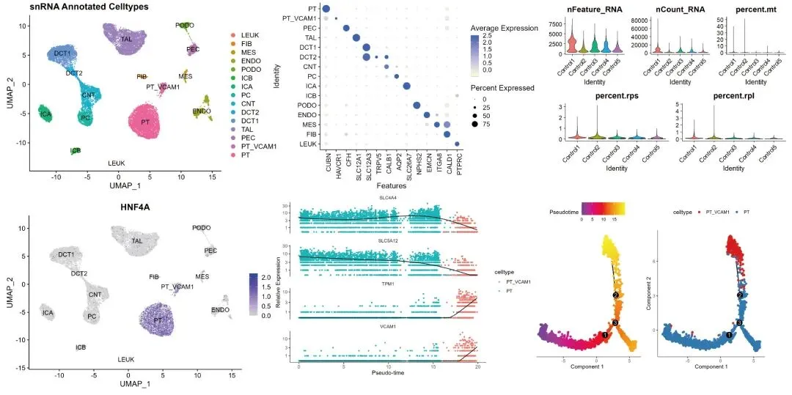
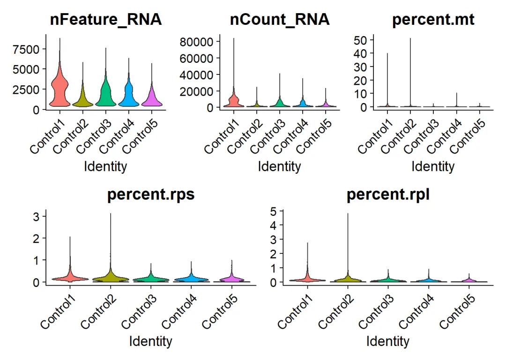
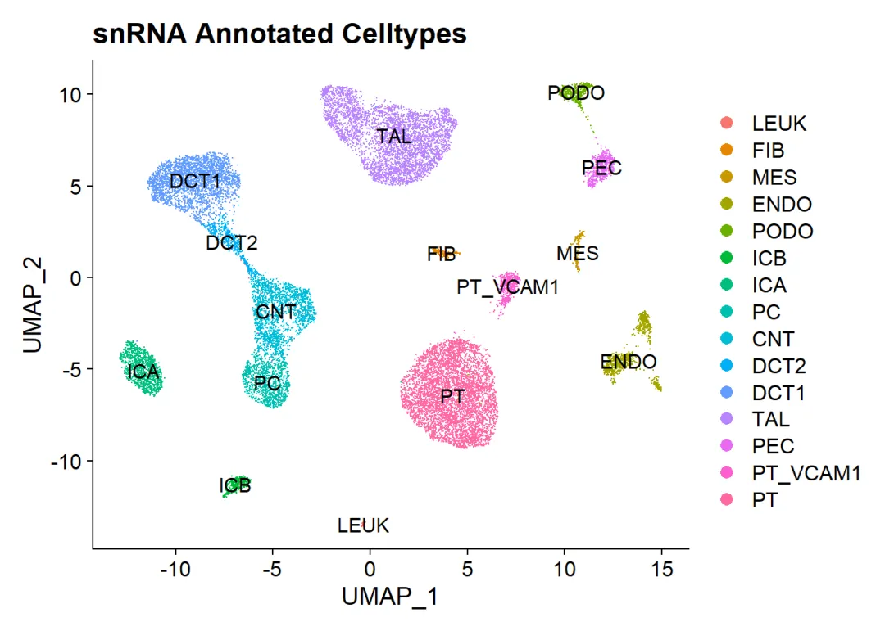
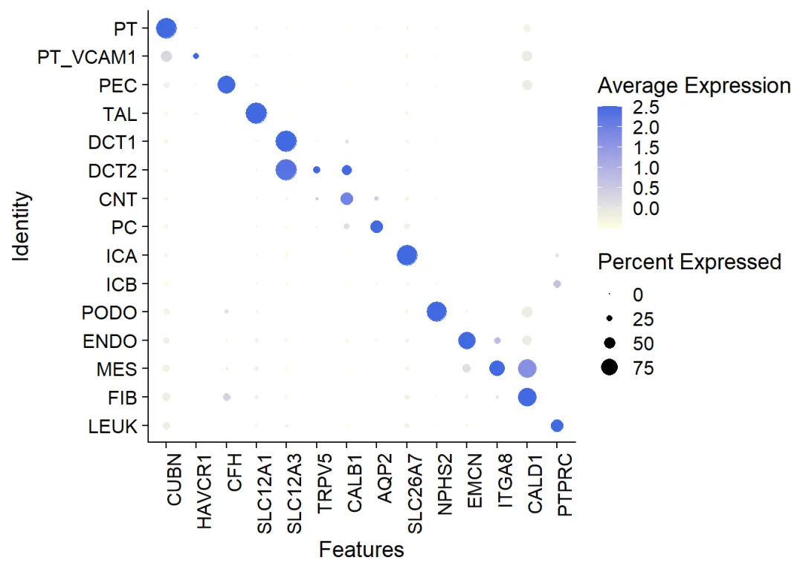
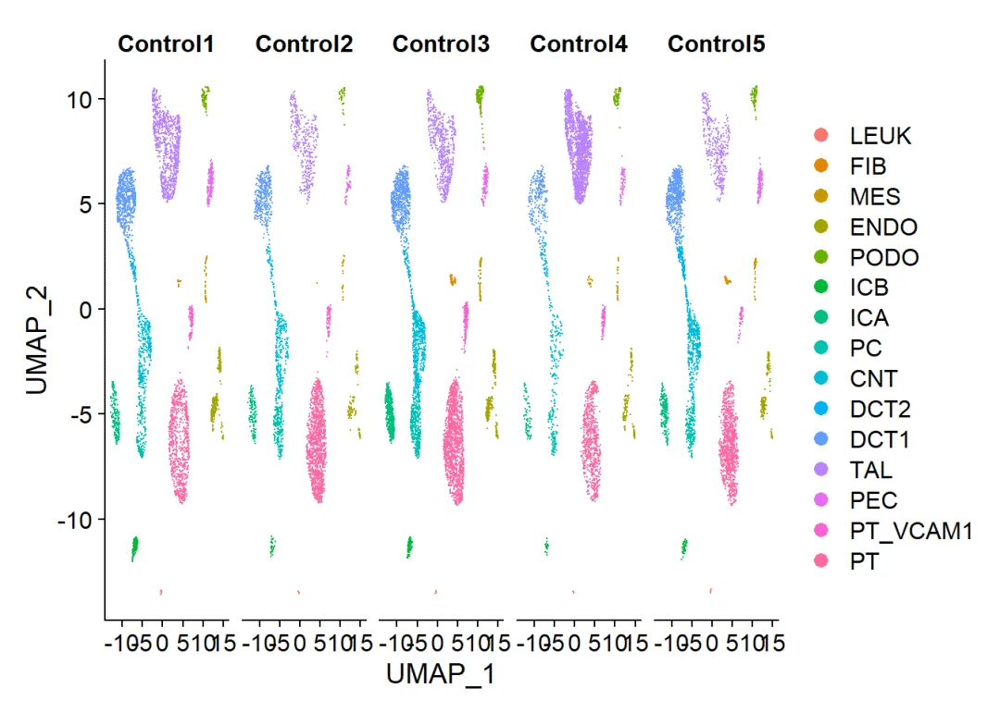
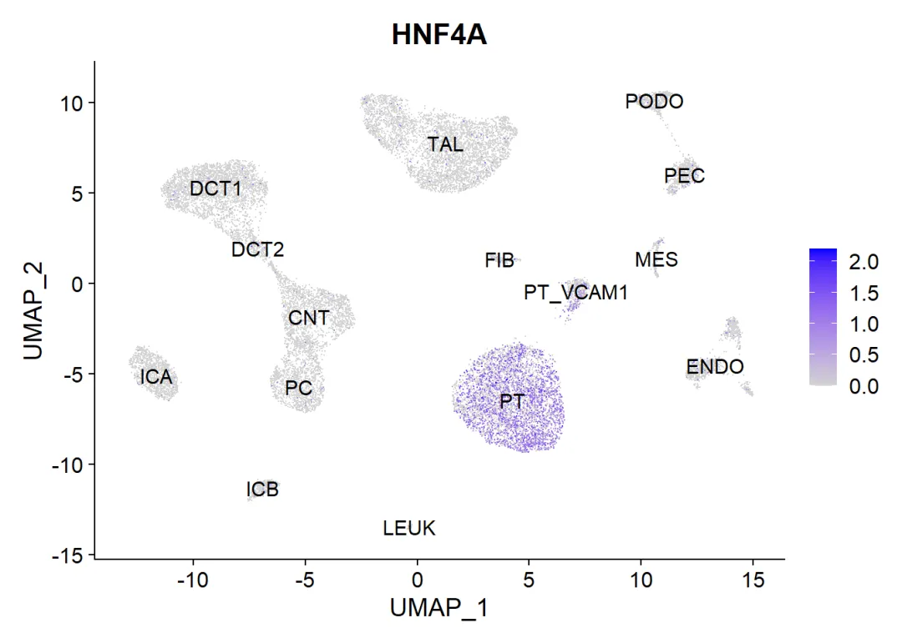
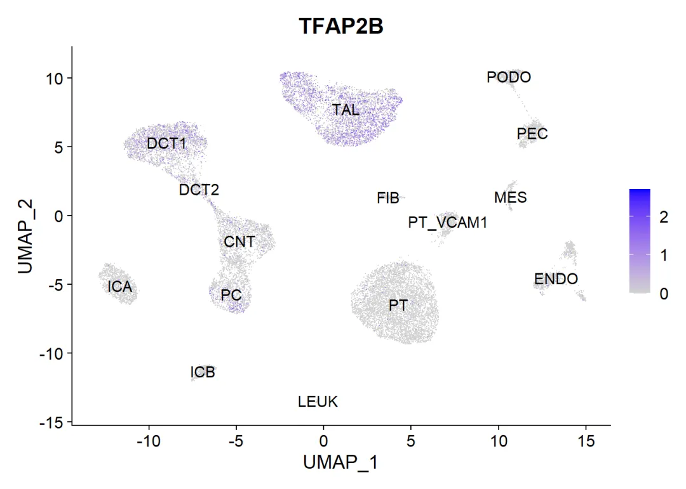
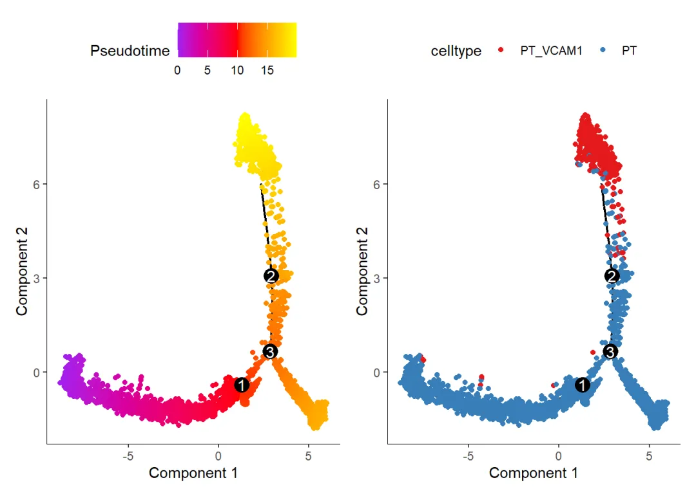
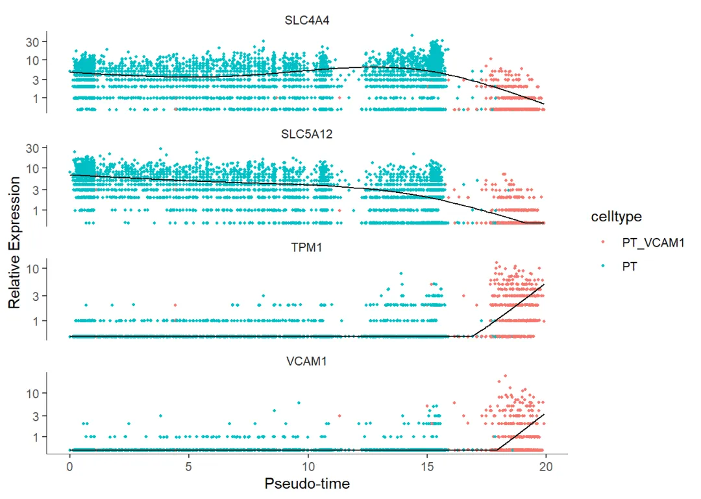

代码复写| 人类肾脏snRNA-seq图谱拟时序分析
原文：https://mp.weixin.qq.com/s?__biz=MzAwMzIzOTk5OQ==&mid=2247506960&idx=1&sn=9f5913231f9583411e47ccf0dcadedf6&chksm=9b3ca540ac4b2c56a60b5f71ab32e1eacd3194af4bfef819b2de60fc50781360876b45837bf7#rd 合集：全文复现
评审环节开始！
** 写在前面**
首届“寻因杯”单细胞代码复写大赛正在展开评审环节，这次带来的是06号作品。本作品复写了题为"Single cell transcriptional and chromatin accessibility profiling redefine cellular heterogeneity in the adult human kidney"的论文，文章链接 ：https://www.ncbi.nlm.nih.gov/pmc/articles/PMC8044133/物种 ：人。数据链接 ：https://www.ncbi.nlm.nih.gov/geo/query/acc.cgi?acc=GSE151302复现图片集锦 ：

文献思路 ：对5个健康成人肾脏标本进行了单核ATAC(snATAC-seq)和RNA(snRNA-seq)测序，以生成成对的、特定细胞类型的染色质可及性和成人肾脏的转录图谱。下述代码主要对部分snRNA-seq结果进行分析复现。
一、复写内容
(1) R包加载
library(Seurat)
## Attaching SeuratObject
library(ggplot2)
library(harmony)
## 载入需要的程辑包：Rcpp
library(Rcpp)
library(DoubletFinder)
library(openxlsx)
library(here)
## here() starts at E:/生信/单细胞测序/Single cell transcriptional and chromatin accessibility profiling redefine cellular heterogeneity in the adult human kidney/寻因杯参数_王子彤
library(dplyr)
##
## 载入程辑包：'dplyr'
## The following objects are masked from 'package:stats':
##
## filter, lag
## The following objects are masked from 'package:base':
##
## intersect, setdiff, setequal, union
library(stringr)
library(tibble)
library(monocle)
## 载入需要的程辑包：Matrix
## 载入需要的程辑包：Biobase
## 载入需要的程辑包：BiocGenerics
##
## 载入程辑包：'BiocGenerics'
## The following objects are masked from 'package:dplyr':
##
## combine, intersect, setdiff, union
## The following objects are masked from 'package:stats':
##
## IQR, mad, sd, var, xtabs
## The following objects are masked from 'package:base':
##
## anyDuplicated, append, as.data.frame, basename, cbind, colnames,
## dirname, do.call, duplicated, eval, evalq, Filter, Find, get, grep,
## grepl, intersect, is.unsorted, lapply, Map, mapply, match, mget,
## order, paste, pmax, pmax.int, pmin, pmin.int, Position, rank,
## rbind, Reduce, rownames, sapply, setdiff, sort, table, tapply,
## union, unique, unsplit, which.max, which.min
## Welcome to Bioconductor
##
## Vignettes contain introductory material; view with
## 'browseVignettes()'. To cite Bioconductor, see
## 'citation("Biobase")', and for packages 'citation("pkgname")'.
## 载入需要的程辑包：VGAM
## 载入需要的程辑包：stats4
## 载入需要的程辑包：splines
## 载入需要的程辑包：DDRTree
## 载入需要的程辑包：irlba
(2)读入数据
dir='GSE151302/'
samples=list.files( dir )
samples
## [1] "GSM4572192_Control1_filtered_feature_bc_matrix.h5"
## [2] "GSM4572193_Control2_filtered_feature_bc_matrix.h5"
## [3] "GSM4572194_Control3_filtered_feature_bc_matrix.h5"
## [4] "GSM4572195_Control4_filtered_feature_bc_matrix.h5"
## [5] "GSM4572196_Control5_filtered_feature_bc_matrix.h5"
sceList = lapply(samples,function(pro){
# pro=samples[1]
sce=CreateSeuratObject( Read10X_h5(file.path(dir,pro)),
project = strsplit(pro,'_')[[1]][2],
min.cells = 5,
min.features = 300 )
return(sce)
})
names(sceList) <- str_split_fixed(samples,'_',3)[,2]
sce.all=merge(x=sceList[[1]],
y=sceList[ -1 ],
add.cell.ids = str_split(samples,'_',simplify = T)[,2])
as.data.frame(sce.all@assays$RNA@counts[1:10, 1:2])
## Control1_AAACCTGAGGGTCTCC-1 Control1_AAACCTGAGTGTTAGA-1
## AL627309.1 0 0
## AL627309.2 0 0
## AL669831.5 0 0
## LINC00115 0 0
## FAM41C 0 0
## AL645608.7 0 0
## AL645608.1 1 0
## SAMD11 0 0
## NOC2L 0 0
## KLHL17 0 0
head(sce.all@meta.data, 10)
## orig.ident nCount_RNA nFeature_RNA
## Control1_AAACCTGAGGGTCTCC-1 Control1 3408 1860
## Control1_AAACCTGAGTGTTAGA-1 Control1 5339 2499
## Control1_AAACCTGCAAGCGCTC-1 Control1 10176 3578
## Control1_AAACCTGCACCAGATT-1 Control1 8909 3016
## Control1_AAACCTGCACGGCGTT-1 Control1 894 731
## Control1_AAACCTGCAGTCAGAG-1 Control1 2035 1314
## Control1_AAACCTGCATGGAATA-1 Control1 11821 3260
## Control1_AAACCTGGTATTCGTG-1 Control1 14906 4479
## Control1_AAACCTGGTTCGGGCT-1 Control1 8138 2709
## Control1_AAACCTGTCAGCACAT-1 Control1 1119 822
table(sce.all$orig.ident)
##
## Control1 Control2 Control3 Control4 Control5
## 6904 4229 6599 4494 4708
(3) 质控
rnaAggr <- sce.all
rnaAggr <- PercentageFeatureSet(rnaAggr, pattern = "^MT-", col.name = "percent.mt") # 线粒体比例
rnaAggr <- PercentageFeatureSet(rnaAggr, pattern = "^RPL", col.name = "percent.rpl") # 核糖体蛋白L比例
rnaAggr <- PercentageFeatureSet(rnaAggr, pattern = "^RPS", col.name = "percent.rps") # 核糖体蛋白S比例
## 提取metadata
metadata <- rnaAggr@meta.data
metadata$orig.ident <- factor(metadata$orig.ident, levels = unique(metadata$orig.ident))
rnaAggr@meta.data <- metadata
orig.ident <- levels(unique(rnaAggr$orig.ident))
p1 <- VlnPlot(object = rnaAggr, features = c("nFeature_RNA", "nCount_RNA", "percent.mt"), ncol = 3, group.by = "orig.ident",pt.size=0)
p2 <- VlnPlot(object = rnaAggr, features = c("percent.rps", "percent.rpl"), ncol = 2, group.by = "orig.ident",pt.size=0)
p1/p2

ggsave('plots/0_qc.png')
## Saving 7 x 5 in image
rnaAggr <- subset(rnaAggr, subset = nFeature_RNA > 500 # use same filter params as aggr
& nFeature_RNA < 4000
& nCount_RNA < 16000
& percent.mt < 0.8
& percent.rps < 0.4
& percent.rpl < 0.4)
(4) 去除双细胞
FindDoublets <- function(library_id, seurat_aggregate) {
rnaAggr <- seurat_aggregate
seurat_obj <- subset(rnaAggr, idents = library_id)
seurat_obj <- NormalizeData(seurat_obj)
seurat_obj <- ScaleData(seurat_obj)
seurat_obj <- FindVariableFeatures(seurat_obj, selection.method = "vst", nfeatures = 2000)
seurat_obj <- RunPCA(seurat_obj)
# ElbowPlot(seurat_obj)
seurat_obj <- FindNeighbors(seurat_obj, dims = 1:20)
seurat_obj <- RunUMAP(seurat_obj, dims = 1:20)
DimPlot(seurat_obj)
## pK Identification (no ground-truth) ---------------------------------------------------------------------------------------
sweep.res.list_kidney <- paramSweep_v3(seurat_obj, PCs = 1:20, sct = F)
sweep.stats_kidney <- summarizeSweep(sweep.res.list_kidney, GT = FALSE)
bcmvn_kidney <- find.pK(sweep.stats_kidney)
pK <- bcmvn_kidney %>% # select the pK that corresponds to max bcmvn to optimize doublet detection
filter(BCmetric == max(BCmetric)) %>%
select(pK)
pK <- as.numeric(as.character(pK[[1]]))
seurat_doublets <- doubletFinder_v3(seurat_obj, PCs = 1:20, pN = 0.25, pK = pK,
nExp = round(0.05*length(seurat_obj@active.ident)),
reuse.pANN = FALSE, sct = F)
# create doublet groupings and visualize results
DF.class <- names(seurat_doublets@meta.data) %>% str_subset("DF.classifications")
pANN <- names(seurat_doublets@meta.data) %>% str_subset("pANN")
p1 <- ggplot(bcmvn_kidney, aes(x=pK, y=BCmetric)) +
geom_bar(stat = "identity") +
ggtitle(paste0("pKmax=",pK)) +
theme(axis.text.x = element_text(angle = 90, hjust = 1))
p2 <- DimPlot(seurat_doublets, group.by = DF.class)
p3 <- FeaturePlot(seurat_doublets, features = pANN)
outFile <- paste0("doublets.",library_id,".pdf")
# pdf(here("plots",outFile))
pdf(paste0('plots/', outFile))
print(p1) # need to use print() when drawing pdf in a function call
print(p2)
print(p3)
dev.off()
# create a df of barcodes and doublet designations
df_doublet_barcodes <- as.data.frame(cbind(rownames(seurat_doublets@meta.data), seurat_doublets@meta.data[[DF.class]]))
return(df_doublet_barcodes)
}
Idents(rnaAggr) <- "orig.ident"
list.doublet.bc <- lapply(orig.ident, function(x) {FindDoublets(x, seurat_aggregate = rnaAggr)})
saveRDS(list.doublet.bc,"temp/list.doublet.bc.rds")
list.doublet.bc <- readRDS('temp/list.doublet.bc.rds')
doublet_id <- list.doublet.bc %>%
bind_rows() %>%
dplyr::rename("doublet_id" = "V2") %>%
tibble::column_to_rownames(var = "V1") # this is the barcode column
table(doublet_id)
rnaAggr <- AddMetaData(rnaAggr,doublet_id)
Idents(rnaAggr) <- "doublet_id"
rnaAggr <- subset(rnaAggr,idents = "Singlet")
saveRDS(rnaAggr,"temp/rnaAggr_singlet.rds")
(4) 细胞聚类
rnaAggr <- readRDS("temp/rnaAggr_singlet.rds")
rnaAggr <- SCTransform(rnaAggr, vars.to.regress = c("percent.mt","percent.rpl", "percent.rps","nCount_RNA"), verbose = TRUE)
rnaAggr <- RunPCA(rnaAggr, verbose = TRUE)
# ElbowPlot(rnaAggr, ndims = 50) # to determine number of dimensions for clustering
rnaAggr <- RunHarmony(rnaAggr, "orig.ident", plot_convergence = TRUE)
rnaAggr <- FindNeighbors(rnaAggr, dims = 1:24, verbose = TRUE, reduction = "harmony")
rnaAggr <- FindClusters(rnaAggr, verbose = TRUE, resolution = 0.7, reduction = "harmony")
rnaAggr <- RunUMAP(rnaAggr, dims = 1:24, verbose = TRUE, reduction = "harmony")
saveRDS(rnaAggr, 'temp/rnaAggr_UMAP.rds')
(5)细胞注释
rnaAggr <- readRDS('temp/rnaAggr_UMAP.rds')
p1 <- DimPlot(rnaAggr, reduction = "umap", label = TRUE) + ggtitle("snRNA Seurat Clustering with Harmony No Doublets")
celltype.markers <- c("CUBN","HAVCR1","SLC5A1","SLC5A2", # PT and PT-VCAM1+ markers
"CFH", # PEC
"SLC12A1", # TAL NKCC2
"SLC12A3","TRPM6", # DCT1 and DCT2 NCC
"SCNN1G","TRPV5", # DCT2/CNT ENaC
"CALB1", # CNT
"AQP2", # PC
"ATP6V0D2", # ICA and ICB
"SLC4A1","SLC26A7", # ICA
"SLC26A4", # ICB
"NPHS1","NPHS2", # PODO
"PECAM1","FLT1","EMCN", # ENDO
"CLDN5", # GEC
"ITGA8","PDGFRB", # MES
"ACTA2","CALD1", # FIB
"PTPRC") # WBC
p2 <- DotPlot(rnaAggr, features = celltype.markers) + theme(axis.text.x = element_text(angle = 90, hjust = 1))
p1/p2
rnaAggr[["orig.clusters"]] <- Idents(object = rnaAggr) # stash cluster idents prior to annotation
new.cluster.ids <- c("DCT1","PT","PT","CNT","TAL",
"TAL","ICA","TAL","PC","PEC",
"ENDO","PT_VCAM1","DCT2","PODO","ICB",
"ENDO","MES","FIB","ENDO","LEUK")
names(new.cluster.ids) <- levels(rnaAggr)
rnaAggr <- RenameIdents(rnaAggr, new.cluster.ids)
# reorder the idents and save celltype annotations in celltype slot metadata
levels(rnaAggr) <- rev(c("PT","PT_VCAM1","PEC","TAL","DCT1",
"DCT2","CNT","PC","ICA","ICB",
"PODO","ENDO","MES","FIB","LEUK"))
rnaAggr@meta.data$celltype <- rnaAggr@active.ident
# reset celltype as primary ident before saving and plotting
Idents(rnaAggr) <- "celltype"
# redraw umap and dotplot with reordered idents
DefaultAssay(rnaAggr) <- "SCT"
p3 <- DimPlot(rnaAggr, reduction = "umap", label = TRUE) + ggtitle("snRNA Annotated Celltypes")
celltype.markers2 <- c('CUBN', 'HAVCR1','CFH', 'SLC12A1', 'SLC12A3',"TRPV5",
'CALB1','AQP2','SLC26A7','NPHS2', 'EMCN','ITGA8',
'CALD1','PTPRC')
p4 <- DotPlot(rnaAggr, features = celltype.markers2,
cols = c("lightyellow","royalblue")) +
theme(axis.text.x = element_text(angle = 90, hjust = 1))
p3/p4
# draw pdf plots for before and after annotation
dir.create("plots", showWarnings = FALSE)
pdf(here("plots","umap.rnaAggr.control.pdf"))
list(p1,p2,p3,p4)
dev.off()
(6) 保存数据
# save preprocessed rnAggr file
print("Saving aggregated snRNAseq object as rnaAggr.rds in:")
dir.create("cellranger_rna_prep", showWarnings = FALSE)
here("cellranger_rna_prep")
saveRDS(rnaAggr, file = here("cellranger_rna_prep","rnaAggr_control.rds"))
(7)绘图
rnaAggr <- readRDS("cellranger_rna_prep/rnaAggr_control.rds")
Idents(rnaAggr) <- "celltype"
# 整体聚类注释
DimPlot(rnaAggr, reduction = "umap", label = TRUE) +
ggtitle("snRNA Annotated Celltypes")

ggsave('plots/fig1b.png')
## Saving 7 x 5 in image
# 各聚类细胞基因表达量
celltype.markers <- c('CUBN', 'HAVCR1','CFH', 'SLC12A1', 'SLC12A3',"TRPV5",
'CALB1','AQP2','SLC26A7','NPHS2', 'EMCN','ITGA8',
'CALD1','PTPRC')
DotPlot(rnaAggr, features = celltype.markers,
cols = c("lightyellow","royalblue")) +
theme(axis.text.x = element_text(angle = 90, hjust = 1))

ggsave('plots/fig1c.png')
## Saving 7 x 5 in image
# 各样本聚类
DimPlot(rnaAggr,reduction = "umap",split.by = "orig.ident")

ggsave('plots/figs3a.png')
## Saving 7 x 5 in image
FeaturePlot(rnaAggr,features = "HNF4A",order=T, label = T)

ggsave('plots/fig3b5.png')
## Saving 7 x 5 in image
FeaturePlot(rnaAggr,features = "TFAP2B",order=T, label = T)

ggsave('plots/fig3b6.png')
## Saving 7 x 5 in image
(8)时序分析
rnaAggr <- readRDS("cellranger_rna_prep/rnaAggr_control.rds")
# 构建cds对象
expr_matrix = as(as.matrix(rnaAggr@assays$RNA@counts), 'sparseMatrix') #大数据集使用稀疏矩阵，节省内存，加快运算
count_data <- GetAssayData(rnaAggr, assay = "RNA",slot = "counts")
gene_metadata <- as.data.frame(rownames(count_data))
colnames(gene_metadata) <- "gene_short_name"
rownames(gene_metadata) <- gene_metadata$gene_short_name
sample_sheet<-rnaAggr@meta.data#将实验信息赋值新变量
pd <- new("AnnotatedDataFrame", data = sample_sheet)
fd <- new("AnnotatedDataFrame", data = gene_metadata)
cds <- newCellDataSet(expr_matrix, phenoData = pd, featureData = fd,
lowerDetectionLimit = 0.5, expressionFamily = negbinomial.size())
# 过滤PT
valid_cells <- row.names(subset(pData(cds), celltype %in% c('PT', 'PT_VCAM1')))
cds <- cds[,valid_cells]
# 预处理
cds <- estimateSizeFactors(cds) # 标准化
cds <- estimateDispersions(cds) # 为后续差异分析做准备
## 筛选平均表达量 > 0.1的基因用于聚类
disp_table <- dispersionTable(cds)
unsup_clustering_genes <- subset(disp_table, mean_expression >= 0.1)
## 过滤小于100个细胞中表达的基因
cds <- detectGenes(cds, min_expr = 0.1) # 在fData(cds)中添加列num_cells_expressed
express_gene <- rownames(subset(fData(cds), num_cells_expressed >=100 ))
target_gene <- intersect(unsup_clustering_genes$gene_id, express_gene)
cds <- setOrderingFilter(cds, unsup_clustering_genes$gene_id)
# 降维
cds <- reduceDimension(cds, max_components = 2,
method = 'DDRTree')
cds <- orderCells(cds) # root_state设置根
save(cds, file = 'cellranger_rna_prep/cds.Rdata')
# 绘图
load('cellranger_rna_prep/cds.Rdata')
p1 <- plot_cell_trajectory(cds, color_by = "Pseudotime")+
scale_colour_gradientn(colours = c("purple", "red",'yellow'))
## Warning: `select_()` was deprecated in dplyr 0.7.0.
## i Please use `select()` instead.
## i The deprecated feature was likely used in the monocle package.
## Please report the issue to the authors.
## This warning is displayed once every 8 hours.
## Call `lifecycle::last_lifecycle_warnings()` to see where this warning was
## generated.
p2 <- plot_cell_trajectory(cds, color_by = "celltype")+
scale_color_brewer(palette = 'Set1')
p1|p2

ggsave('plots/fig6a1.png')
## Saving 7 x 5 in image
keygenes <- c('VCAM1', 'TPM1', 'SLC5A12', 'SLC4A4')
cds_subset <- cds[keygenes,]
plot_genes_in_pseudotime(cds_subset,color_by='celltype')

ggsave('plots/fig6a2.png')
## Saving 7 x 5 in image
01
二、测试文件及代码
如果你也想学习本文的代码和思路，我们给大家准备好了测试文件和代码。
链接：
https://pan.baidu.com/s/11bPVwXVXLLa2hgFH3IBd7g?pwd=6qq4
提取码：6qq4

02
三、合作方介绍
本次活动由Biomamba生信基地 组织主办、北京寻因生物科技 有限公司独家冠名、科研者之家、西柚云超算联合赞助，设立总价值约50W 的科研助力基金。 北京寻因生物科技有限公司：
北京寻因生物科技有限公司（简称寻因生物）成立于2018年，秉承“用技术温暖生命，预见未来”的企业愿景，致力于全球单细胞市场标准普世化发展，推动单细胞技术在早筛、临床、药研等应用方向的深耕落地，为全球科学家、技术公司及药企工业等客户提供可信赖的高品质单细胞技术服务及实验室建设解决方案。
科研者之家：
科研者之家（www.home-for-researchers）是目前国内最知名的科研工具箱平台，以“科研不停，神器不止”为理念，自2019年上线以来，多款工具火爆科研界，如AI写作助手、Figdraw在线绘图平台、生信零代码平台、AI润色、DLP一键改写降重、中文版Pubmed、课题思路助手等。截止目前，包括Nature，Advanced Materials等顶级期刊在内，科研者之家相关科研工具被论文引用已超2300次之多。
西柚云超算：
西柚云是一家专注于科研共享计算的云服务基建型公司。于2022年推出独立研发的大禹共享型计算系统，具有实例动态迁移（拒绝传统型共享服务器单节点卡顿）、开箱即用的生信环境、每个用户拥有独立的实例和root权限等特性。
03
四、往期作品回顾
干细胞样CD4+ T细胞与自身免疫性血管炎 结直肠癌免疫图谱中的基因表达程序 MLP模型鉴定免疫细胞发育和瘤内T细胞耗竭的单细胞染色质图谱 T Cell单细胞参考图谱 小鼠纹状体单细胞基因变化图谱
04
**本次活动最终解释权归主办方所有!******主办方拥有对作品的编辑、宣发权利!

如何联系我们

 公众号后台消息回复不便，这里给大家留一下领取资料及免费服务器(足够支持你完成硕博生涯的生信环境)的微信号 ，方便各位随时交流、提建议（科研任务繁重，回复不及时请见谅）。此外呼声一直很高的交流群 也建好了，欢迎大家入群讨论：
公众号后台消息回复不便，这里给大家留一下领取资料及免费服务器(足够支持你完成硕博生涯的生信环境)的微信号 ，方便各位随时交流、提建议（科研任务繁重，回复不及时请见谅）。此外呼声一直很高的交流群 也建好了，欢迎大家入群讨论：
大家可以阅读完这几篇之后添加给生信入门初学者的小贴士 如何搜索公众号过往发布内容

 您点的每个赞和在看，我都认真当成了喜欢
您点的每个赞和在看，我都认真当成了喜欢